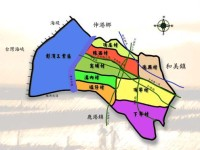
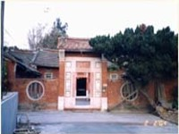
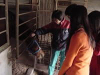
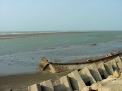

1.Description of Our Community
Hsien-Hsi is a small coastal township located in northwest Changhua. Changhua was once called 'Bansianbao,' meaning 'Half Line Castle,' during the middle of Ch'ing dynasty. In Chinese, 'Hsien' means 'line' and 'Hsi' means 'west.' Hsien-Hsi is sitting at the west of Changhua, and that is why it is so named. Most of the natives of Hsien-Hsi are fishermen. People are kind and friendly. The products of Hsien-Hsi are rice, duck eggs, quail eggs, water chestnut, pearl oysters, etc. Hsien-Hsi was once called 'the kingdom of Taiwan duck eggs' because during the golden age there were hundred of thousands of ducks along the coast. The view of ducks looked like a long, white blanket. It was very gorgeous. Geographically, Hsien-Hsi is a coastal plain. Lured by the view of the beautiful beach, many fishermen and tourists come to Hsien-Hsi, especially on holidays. The first place they visit is usually Wunzai Port, located at the boundary between Hsien-Hsi and Lugang. This port is famous for the fresh seafood. Rouzongjiao beach is also a place tourists like to visit. Finally, the development of Changhua Coastal Industrial Park brings in businesses that help spur the economy of Hsien-Hsi.
2. Summary of Our Project
Hsien-Hsi is called 'Fongtoushueiwei' because it is located where the wind begins and the water ends. The beach at Changhua Coastal Polder often attracts many tourists. The two most famous are Rouzongjiao and Wunzai Port. At Rouzongjiao beach, visitors can go fishing, swimming, horseback riding, birdwatching, beach motorcycle riding, shrimp monkey digging, etc. Although Wunzai Port is not big, the fishermen often catch many fresh fish, shrimp, and crab. Therefore, more and more tourists come to this small port on holidays. These advantages help Hsien-Hsi prosper. Recently some people want to make Hsien-Hsi beach into a resort. However, we found no good plans and equipments to enhance the natural beauty of the beachscape. Therefore, we collected all kinds of documents, observed Hsien-Hsi more carefully, and interviewed the head of the township and people who had valuable information about Hsien-Hsi. As a result, we have tried to present a new proposal for Hsien-Hsi and give Hsien-Hsi a unique and brand new future.
3. Our Computer and Internet Access
A. Percentage of students using the Internet at home: more than 50%
B. Number of workstations with Internet access in the classroom: 4-6
C. Connection speed used in the classroom: dedicated connection
D. Number of years our classroom has been connected to the Internet: 1
E. Additional comments concerning your computer and/or Internet access (Optional):
Our school uses one FTTB and one T1 network wires to connect the Internet. We set up firewall, and adopt NAT system to complete the environment. Except our web server, we link every server with Linux system and build up the whole Intranet environment, thus provide basic services. All the students involving in this project have either ADSL services at home.
4. Problems We Had To Overcome
1.Time problems: the pressure of school and competition As ninth graders, the serious pressure is how to pass the Basic Academic Competence Test, therefore, we don't have much time to think or discuss our project. We usually use break time, lunch break or after school to discuss and do scheduled activities. All the activities take a lot of time and efforts. Although the thought of giving up sometimes comes to our minds, the encouraging of the teacher gives us more confidence to keep going.
2.From macroscopy to microscopy: To understand our hometown more, we visited the attractions and interviewed the local people. We went to the Hsien-Hsi beach many times. At the beginning, we just knew Hsien-Hsi a little. In the end, we observed, analyzed and interviewed in detail more; we even spent one half day each time.
3.Writing problems: By cooperation, we conquer each problem that we have to face every time. A half year ago, we wouldn't understand or catch the writing skills and topic when we wanted to write. This is because we don!|t usually write. However, we can write down the feeling for our hometown now. Furthermore, we have the abilities to modify the content by continuing discussing. We hope that we can introduce the strengths of Hsien-Hsi beach. This project not only involves us to know our hometown more, but also makes us learn more in our life.
5. Our Project Sound Bite
We have lived in Hsien-Hsi for more than ten years, but we always envy the prosper of other cities and forget to love our hometown at the bottom of our heart before. Now we have to love, know and treasure our hometown more than before, otherwise these good memories will flee when Hsien-Hsi is developed. Creating this project, we learn much from the people interviewed, especially their philosophy of life. They love Hsien-Hsi and work hard. whether the surrounding environment is difficult or not, they always keep thankful, optimistic, brave and uncomplaining. All of these personalities move us deeply. Living in this material society, maybe we should observe our hometown in different ways. Furthermore, we should pay more thankful, enthusiastic attention because we grew up here. Owing to this opportunity, we understand ' beauty is everywhere; we don't lack beauty in our eyes; we lack discovery in our mind.' We also learn many skills. Although we face many difficult problems, we do our best to overcome them. All of these experiences will keep in our mind forever.
6. How did your activities and research for this CyberFair Project support standards, required coursework and curriculum standards?
We find that our research for this International School CyberFair project can support curriculum guidelines about literature, social science, art, and science. Below are the examples: 1.Literature: We improve the abilities of literature through interviewing local people, editing the project and analyzing the information. 2.Social science: We know Hsien-Hsi more and understand the interaction among people through participating in this team. Furthermore, we realize the importance of loving the hometown and earth. 3.Art: We usually go to Hsien-Hsi beach, record the beautiful scenery, and interview local people & tourists. Therefore, our imagination, creation, feeling and attitude for art are promoted. In addition, we learn how to plan and act by drawing the local map. 4.Science: Our research includes knowing local biology and environment, for example, the growth of oyster, the behavior of monkey shrimp and bird!|s care. We also use all kinds of technologies and Internet to produce web pages that can introduce our community to the whole people in the world. Finally, we know and value us more through group activities. In addition, we learn how to appreciate other persons' strengths. All of those thoughts help us interview, record, and analyze more effectively.
|








 |